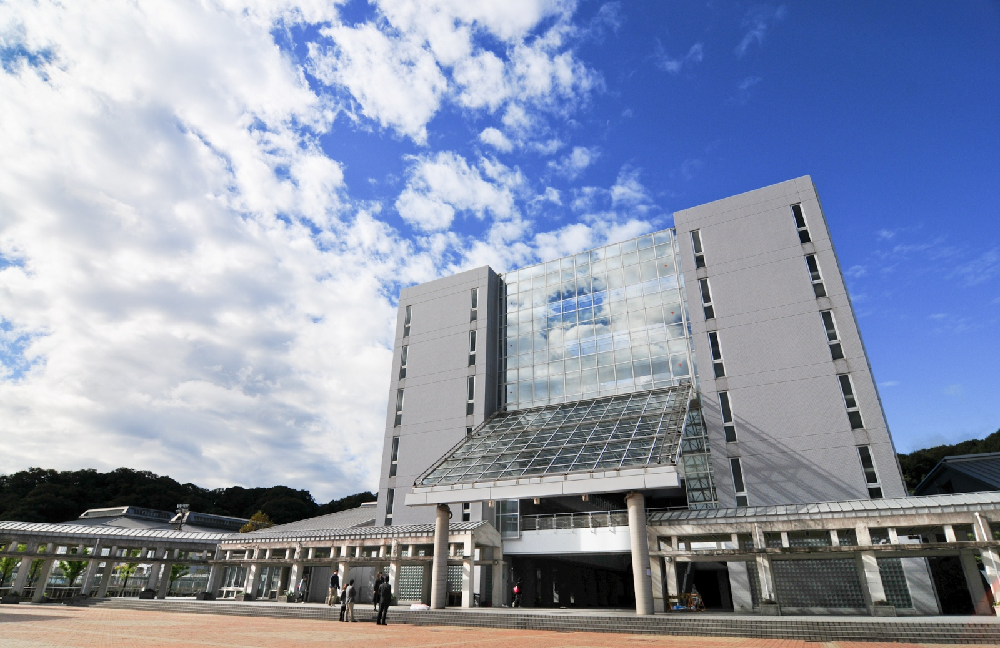
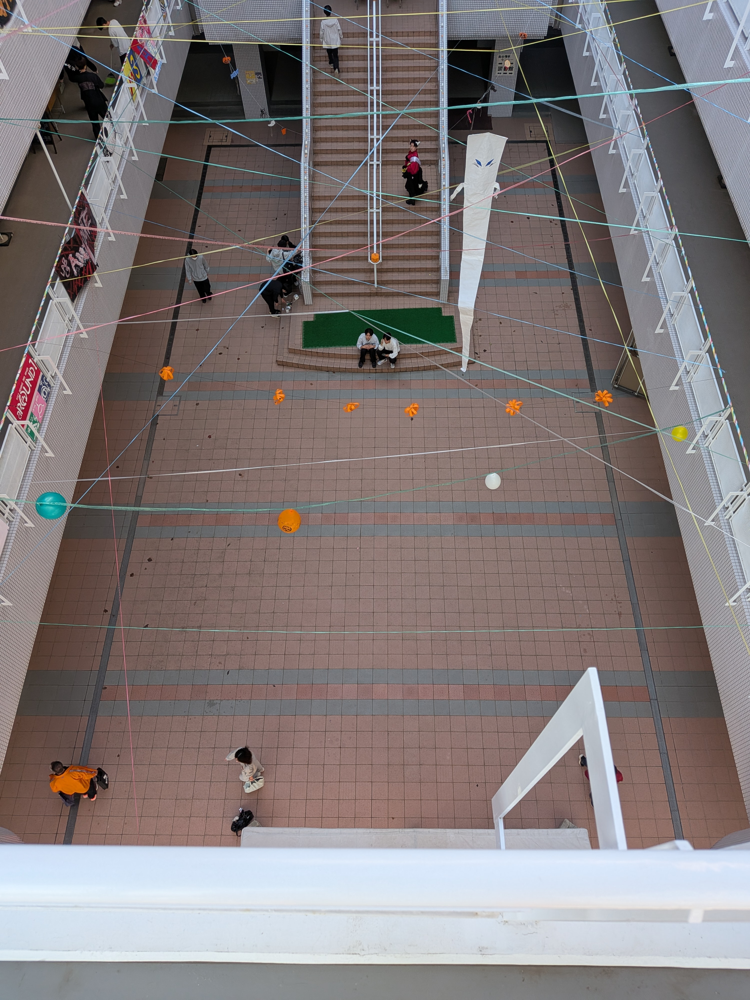
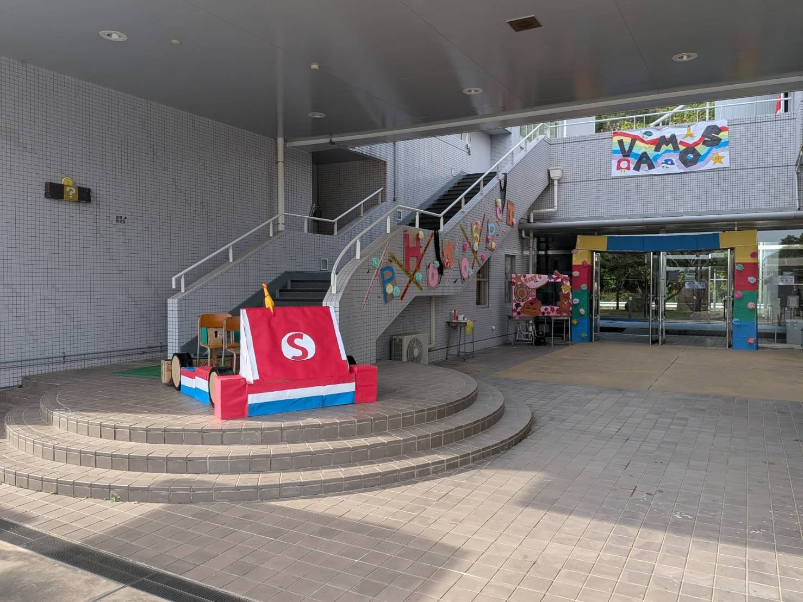
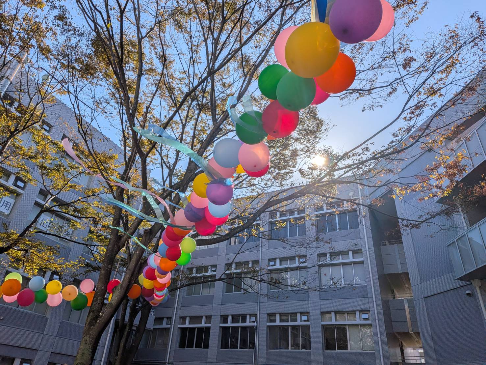
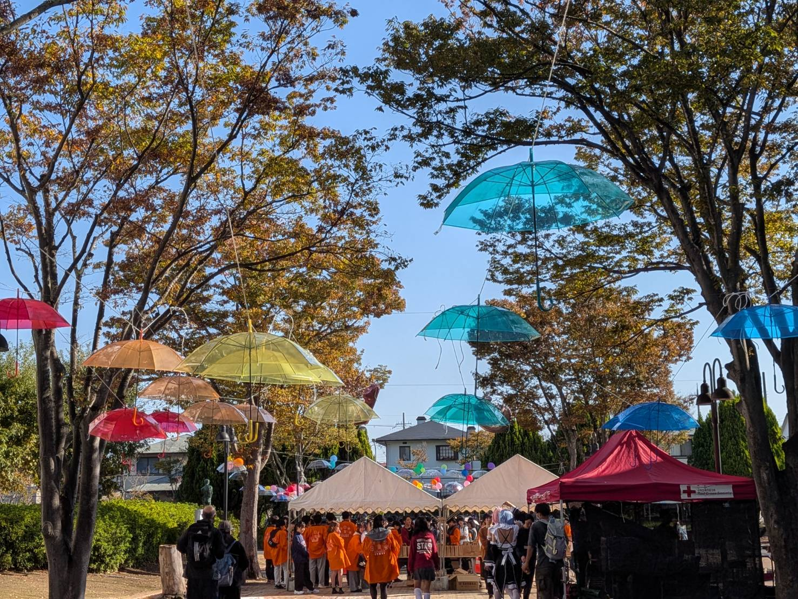
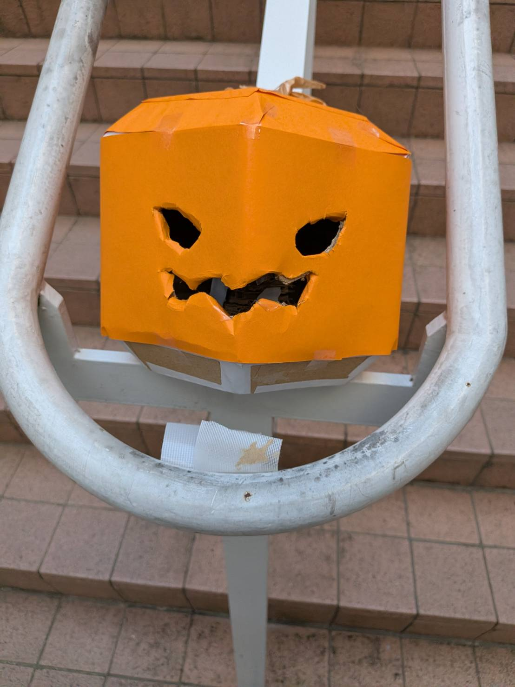
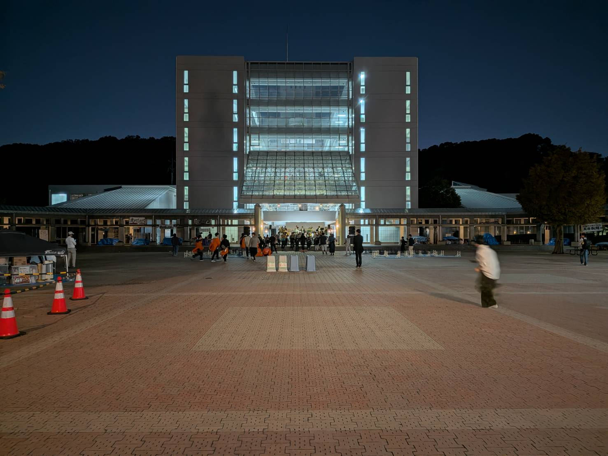
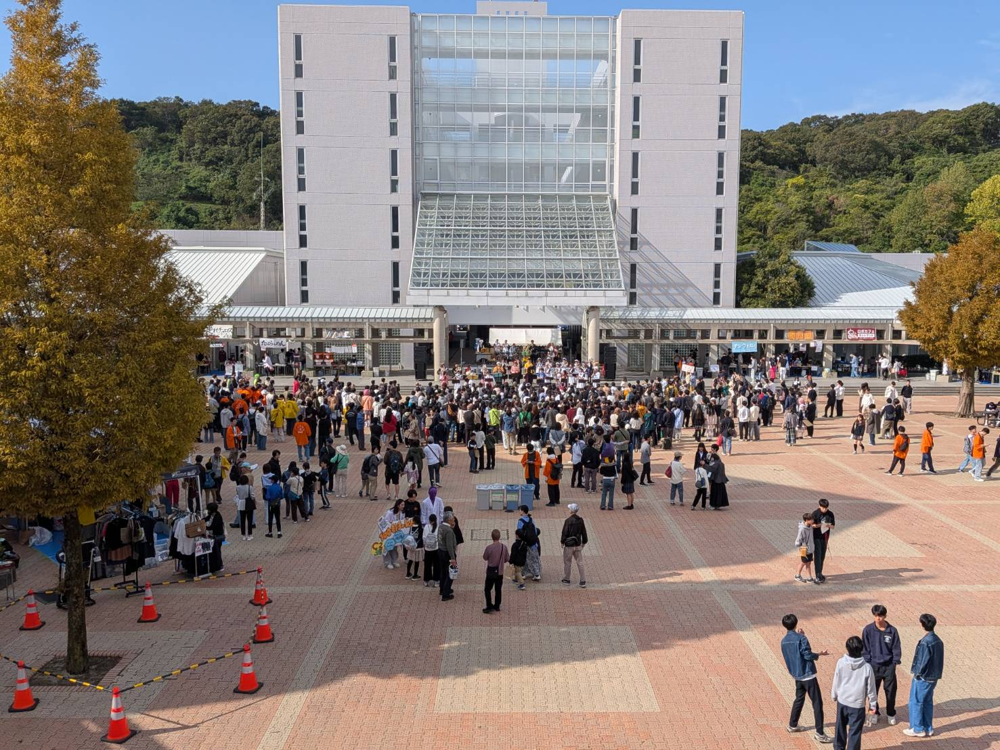
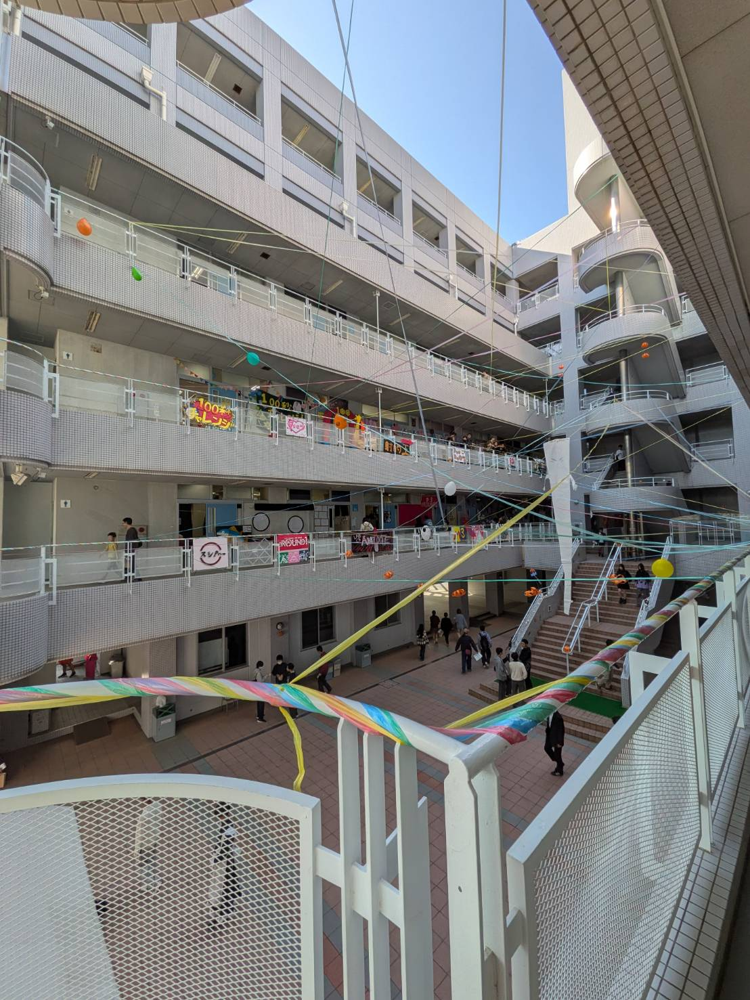

第６３回神戸高専祭
2026.10.31 - 11.01

Thank you for coming!!
コメント
第63回神戸高専祭は10月31日・11月1日に実施しました！
両日合わせて約1万人の方にご来場いただき、非常に盛り上がりました。
今年の神戸高専祭テーマは「Designed by Students in Kobe Kosen」。このテーマは、神戸高専祭の目標を定義するのではなく、神戸高専祭がどのようなものであるかを示しています。学生それぞれが思う「神戸高専祭」を集めることにより、神戸高専でしか体験できない高専祭を創り出しました！
この開催レポートでは、いくつかのトピックに分けて今年の神戸高専祭を振り返ってみたいと思います！
●実行委員会企画
(スタンプラリー・エンカウントラリー・模擬店グランプリ)
例年実施している「スタンプラリー」「模擬店グランプリ」に加え、今年は「エンカウントラリー」を復活させました！
タスキをつけた実行委員を探してスタンプを獲得する本企画に、非常に多くの来場者の方にご参加いただきました。私自身も、様々な方にお声がけいただき、交流できたことは、とても良い思い出になりました！
また、スタンプラリーには多くの方にご参加いただき、8個全てをスタンプで埋めた方も少なくありませんでした。8個集めた方には数量限定でアクリルキーホルダーをプレゼントしました。こちらは販売しているものとは別柄です。手に入れた方、おめでとうございます！！
模擬店グランプリでも、来場者の方々にご投票いただき、グランプリの模擬店には賞品を贈呈しました！グランプリとなった模擬店の皆さん、おめでとうございます！！
●ラムダ技術部〈模擬店・講演会〉
今年もラムダ技術部さんにお越しいただき、模擬店出店と講演会を実施していただきました。毎年恒例になりつつあるこのコラボも今回で4年目に。
模擬店では、様々な酸を比較して試飲することができる「『利き酸屋』酸の飲み比べ＆ミラクルフルーツ体験」を出店いただきました。今までのケチシリーズとは異なる、化学・生体分野のジャンルで出店いただき、多くの来場者に足を運んでいただきました。
また、講演会では、学生向けとして「気がついたらYoutuberになっていた話」、一般向けとして「ダサいスライドの作り方〜AI時代に求められる情報伝達スキル〜」というタイトルでお話しいただきました。両会とも学生を含め多くの方にお越しいただき、素晴らしい講演会となりました。実は私も学生向け講演会は聴かせていただきました。会場内では時折笑いが起きる面白さがありながらも、今後の人生において勉強になる点が多くあり、非常に充実した講演会でした。
ラムダ技術部さん、ご参加いただきありがとうございました！！
●クラス企画
1年生には、校内の装飾をしてもらいました。昨年度と比較して、今年は大幅に装飾範囲を広げ（て、予算も同様に増額し）ました。1年生の皆さんも初めての高専祭でありながらも、アイディアを出し合いながらDesignを進めてくれ、今年は例年以上に個性的な装飾が神戸高専全体を彩りました！
2・3年生には、それぞれのクラスで個性あふれる「クラス企画」を出展してもらいました。射的やお化け屋敷など、一般的な学祭によくあるものから高専らしさ全開のマニアックなものまで、またはそれらを混ぜ合わせたものなど、本当に多種多様な企画で溢れていました。クラス企画をご覧になられた皆さん、お気に入りのクラスはありましたか？
●科展示
各学科の専攻内容を活かした展示を行う科展示。展示計画は4年生が行うため、今年は旧学科の内容をメインに展示を行なっていただきました。小さいお子様や中学生にもお越しいただき、神戸高専が普段どのような勉強をしているのか・どんな研究しているのかを知っていただけたかと思います。
もし、今回の高専祭で進学先として興味を持たれた方がいらっしゃれば、来年夏に開催予定のオープンキャンパスに、ぜひご参加ください！実際に各学科の専門的な内容を手を動かしながら体験することができると思います！
●部展示・特別展示・自主制作物即売会
今年はメインアリーナと芸術教室で、部展示・特別展示と自主制作物即売会をそれぞれ出展していただきました。
部展示・特別展示では、それぞれの団体が普段行っている活動内容を中心に展示をしていただきました。各団体それぞれがユニークで面白い展示を行なっており、新たな発見も多くありました。
自主制作物即売会は2年前から始まった、某コミケのような展示です。それぞれの団体が、本・キーホルダー・雑貨などのグッズなど様々なものを販売・配布していました。高専生の少しオタクな雰囲気を存分に感じていただけたかと思います！
●スポンサーシップ
神戸高専祭では、数年前より神戸高専祭の実施にご協力いただける企業様に対してスポンサーシップをご案内しております。
今年度は過去最多の45社の企業様にご協力いただきました！神戸高専祭の企画内容もより充実したものになり、神戸高専祭がより素晴らしいものになったと強く感じます。
スポンサー企業の皆様、この度はご参加いただきまして誠にありがとうございました！！
●企業展示ブース
上記のスポンサー企業様のうち、プラチナスポンサー・ゴールドスポンサーの希望される企業様には、「企業展示ブース」をご出展いただきました。各企業様の専門技術や普段のお仕事内容、採用情報などを高専生をはじめ非常に多くの方にご紹介いただくことができました。企業様ごとに専門とされる分野が異なり、来場者の皆様からは「様々な企業を知ることができてよかった」といったお声をいただきました！
ご出展いただきました、プラチナスポンサー・ゴールドスポンサー企業の皆様、休日にも関わらずご参加いただきありがとうございました！
●ステージイベント
今年もステージイベントは非常に盛り上がりました！KCCTライブをはじめ、ビンゴ大会、カラオケ大会、KCCTパフォーマンスなど、ご来場いただいた皆さんとともに楽しい時間を過ごすことができました！
また、今年はKCCTファッションショーと部活動対抗企画を一般開場時間に移動したことにより、一般来場者の皆様にもご観覧いただくことができました。
●模擬店
今年は過去最多級の27団体の出店がありました。学祭の模擬店といえばこれという店舗から、提供にロボットを使用したり、モバイルオーダーを導入した店舗といった工業高専を感じさせる店舗など、様々な出店がありました。
また、先述の通り、ラムダ技術部さんには通常の模擬店形式にて、「利き酸屋」をご出店いただきました。年齢・性別を問わず様々な方にお楽しみいただけたかと存じます。
お気に入りの模擬店が見つかっていれば幸いです。
●キャッシュレス決済
今年は、キャッシュレス決済として「PayPay」を導入しました！日本国内では高いシェアを誇る決済ブランドの対応により、非常に多くの方にPayPayをご利用いただけました。来年度、PayPayが導入されましたらご活用いただけますと幸いです！
以上が今年の神戸高専祭の大まかな振り返りです！
両日ともに天気にも恵まれました。ご来場いただいた皆様にとって、最高の神戸高専祭と感じていただければ嬉しいです。
神戸高専祭は来年度も実施予定です。ぜひお越しいただければ幸いです！
それでは、また来年！ ( ＾∀＾)ノシ
ギャラリー







